От ветреных равнин до глубоких вод — небольшие заметки о местах, в которых хочется задержаться. Выбери главу или читай дневник по порядку.
✦
01 · Анемо
Мондштадт: навстречу ветру
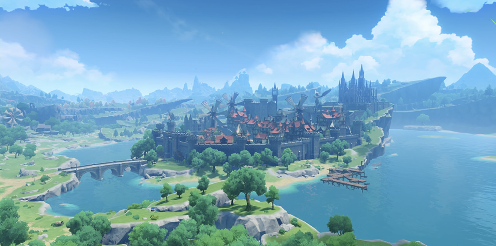
Город, к которому ведут открытые дороги
Мондштадт легко представить первой страницей путевого дневника. Его образ складывается из открытого пространства, зелёных склонов и города посреди Сидрового озера. Сначала взгляд цепляется за общую панораму, а затем начинает различать стены, крыши и высокие силуэты. В этих видах много воздуха: город не закрывает горизонт, а становится одним из ориентиров большого пейзажа.
Хорошая прогулка здесь начинается с простого наблюдения. Посмотри, как дорога подходит к воде, как меняется цвет берега и где заканчивается линия деревьев. На общей карте такие детали кажутся маленькими, но именно они превращают перемещение между точками в настоящее исследование. Необязательно сразу выбирать далёкую цель: иногда короткая тропа вдоль озера оказывается интереснее прямого пути.
Сидровое озеро, Побережье Сокола и Мыс Веры показывают разные стороны одного региона. У озера взгляд возвращается к городу, на побережье раскрывается простор, а с мыса особенно хорошо читается линия моря. Если рассматривать эти пейзажи рядом, можно заметить, как знакомые оттенки неба и травы создают общее настроение. Именно с такого сравнения удобно начинать собственные заметки о мире игры.
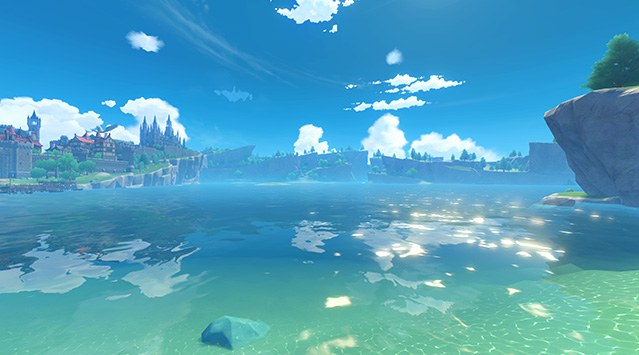
Сидровое озеро
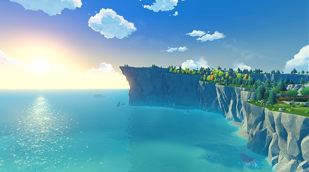
Мыс Веры
✦
02 · Гео
Ли Юэ: между горами и морем
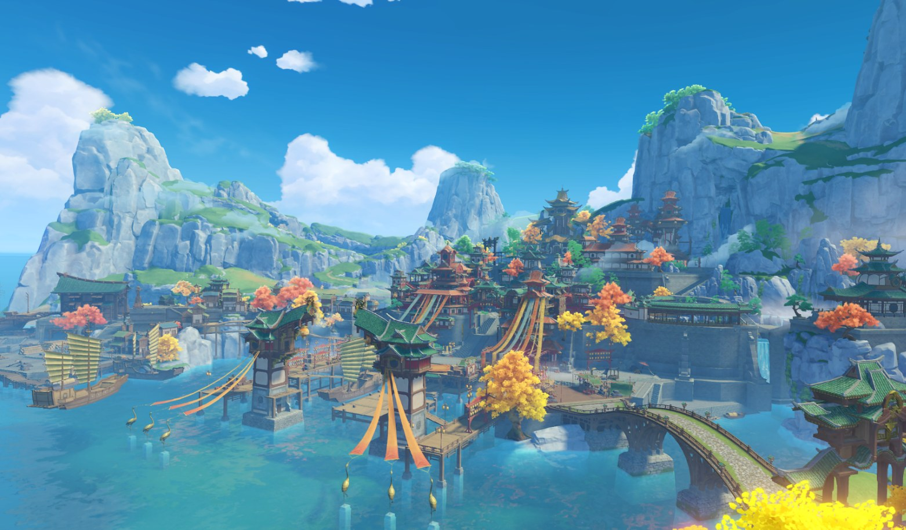
Гавань, в которой сходятся пути
После открытых равнин Мондштадта Ли Юэ воспринимается совсем иначе. Здесь пейзаж держится на выразительных вертикалях: скалах, вершинах и многоярусных силуэтах построек. Порт связывает эту каменную местность с морем. В одной панораме соседствуют природные формы и созданные людьми линии, поэтому изображение хочется рассматривать постепенно, переходя от дальнего плана к ближнему.
Для заметки об этом регионе можно выбрать два маршрута взгляда. Сначала проследить береговую линию и найти места, где вода встречается с городской застройкой. Затем перевести внимание к горам и сравнить их очертания с крышами. Такой способ наблюдения помогает увидеть, почему отдельные детали не распадаются на случайный набор: архитектура и ландшафт поддерживают друг друга.
Горы Тяньхэн и Тростниковые острова продолжают эту историю за пределами порта. На одном изображении пространство собирается вокруг каменных склонов, на другом — вокруг воды, растительности и мягкого света. Это хороший повод задержаться и сравнить два вида одной области. Атлас не диктует единственный правильный маршрут: можно начать с гавани, а можно сначала выбрать тихий пейзаж и лишь потом вернуться к большому городу.
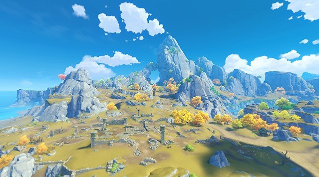
Горы Тяньхэн
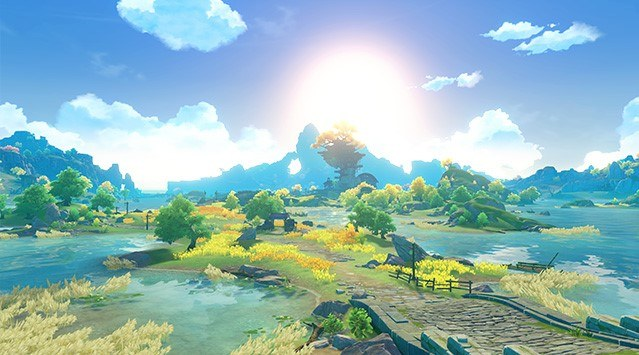
Тростниковые острова
✦
03 · Электро
Инадзума: острова и цветущая сакура
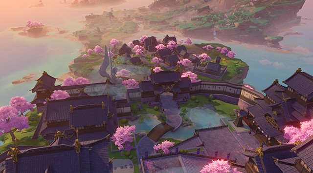
Город над морем, залитый вечерним светом
Инадзума меняет привычный рисунок путешествия: здесь маршрут проходит между островами, а море становится постоянной частью пейзажа. На панораме города особенно заметны многоярусные крыши, цветущие деревья и высокий дворец. Розовые, фиолетовые и тёплые вечерние оттенки создают настроение, которое легко узнать даже без подписи к изображению.
Начать знакомство удобно с общего вида. Найди линию берега, затем проследи, как город поднимается к верхней точке острова. Постройки и растительность образуют несколько планов, поэтому взгляд постепенно движется от ближних крыш к далёкому горизонту. В этой главе интересно замечать, как строгая геометрия архитектуры соседствует с мягкими очертаниями деревьев.
Рито и лес Тиндзю показывают другие стороны островного мира. Улицы Рито собраны вокруг небольших зданий и яркой листвы, а лесной кадр становится прохладнее и спокойнее. Сравни освещение и расстояния между деталями на двух иллюстрациях: одна приглашает пройти по улице, другая — задержаться среди деревьев. Так три пейзажа складываются в небольшую самостоятельную прогулку.
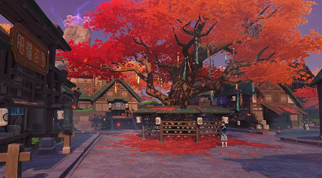
Остров Рито
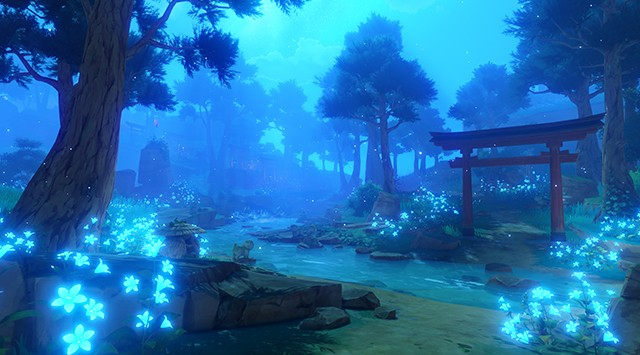
Лес Тиндзю
✦
04 · Дендро
Сумеру: под кронами большого леса
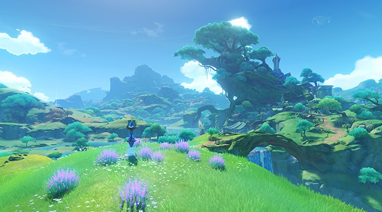
Город, в котором архитектура встречается с деревом
Образ Сумеру объединяет тропический лес и пустынные пространства. Для этой главы выбрана его зелёная сторона: город среди ветвей, лесная Гандхарва и светлые сады Пардис Дхяй. После морских панорам Инадзумы взгляд оказывается внутри густой растительности. Здесь интереснее следить за тропами, переплетением ветвей и небольшими просветами между листьями.
На общем виде города природные формы помогают прочитать архитектуру. Большое дерево становится главным ориентиром, а постройки словно продолжают его линии. Рассматривай изображение снизу вверх: сначала найди дорогу и ближние растения, затем переходи к зданиям и верхней части кроны. Такой маршрут взгляда хорошо передаёт ощущение многоуровневого лесного пространства.
Гандхарва показывает более камерную сцену под деревьями, а Пардис Дхяй раскрывается через свет, дорожки и ухоженные растения. Эти места удобно сравнивать по тому, сколько неба остаётся в кадре и куда ведут видимые тропы. Пустыня Сумеру заслуживает отдельной прогулки; здесь дневник сознательно задерживается в лесах, чтобы внимательнее рассмотреть одну сторону большого региона.
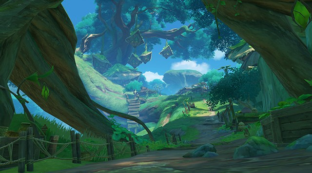
Гандхарва
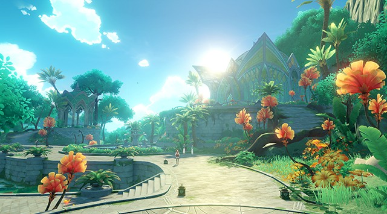
Пардис Дхяй
✦
05 · Гидро
Фонтейн: по течению истории
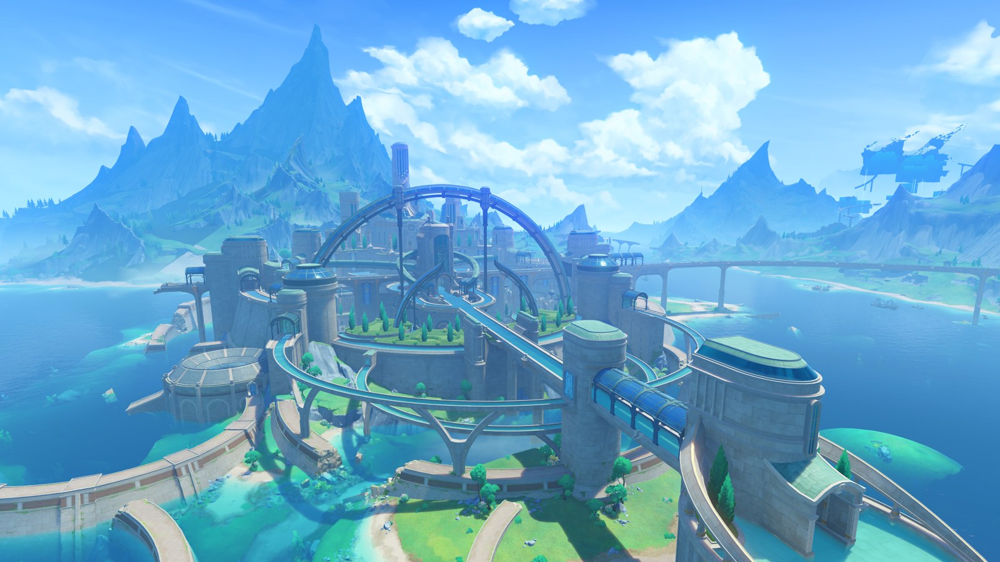
Город, отражающийся в воде
Фонтейн задаёт дневнику водный ритм. В его образе встречаются городские сооружения, большие водопады и подводные пространства. Светлая архитектура заметно выделяется на фоне синей воды, а протяжённые линии направляют взгляд вглубь пейзажа. Здесь особенно интересно сравнивать общий вид города с тем, что открывается ниже поверхности: привычная панорама получает ещё одно измерение.
Кур-де-Фонтейн и порт Ромарин удобно рассматривать как две разные остановки. Первый кадр помогает увидеть устройство городского силуэта, второй — почувствовать масштаб воды и перепад высот. Попробуй найти на изображениях повторяющиеся формы: арки, вертикальные опоры и плавные изгибы. Эти детали связывают отдельные места, даже если они показаны с разных точек и при разном освещении.
Элтонская впадина меняет сам способ наблюдения. Вместо далёкого горизонта внимание привлекают подводные растения, глубина и проходящий сквозь воду свет. Такой контраст хорошо завершает маленький атлас: после равнин и гор путешествие приводит к пространству, которое хочется изучать медленно. Водная тема дневника напоминает об этой главе, а спокойные цвета сайта позволяют самим пейзажам оставаться главным впечатлением.
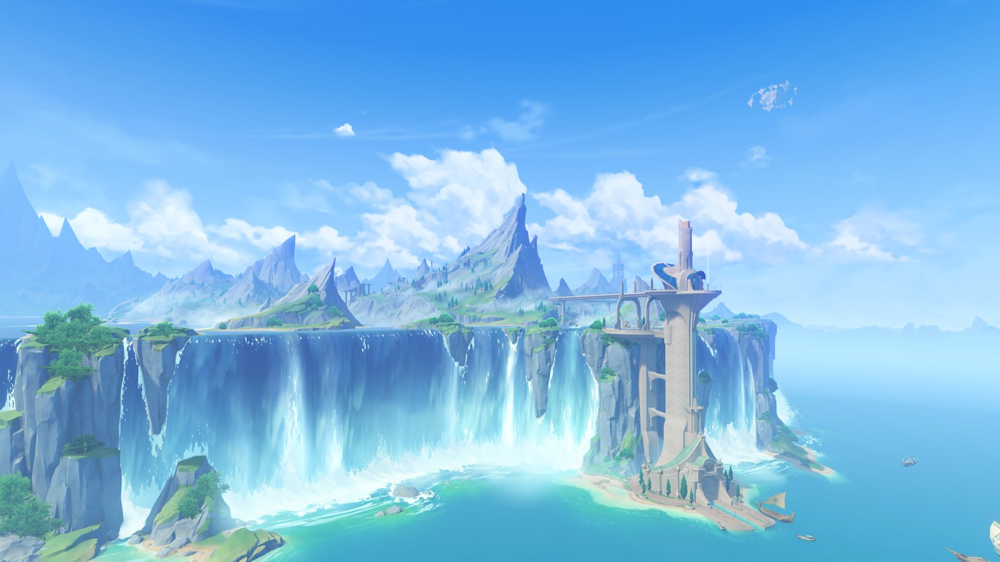
Порт Ромарин
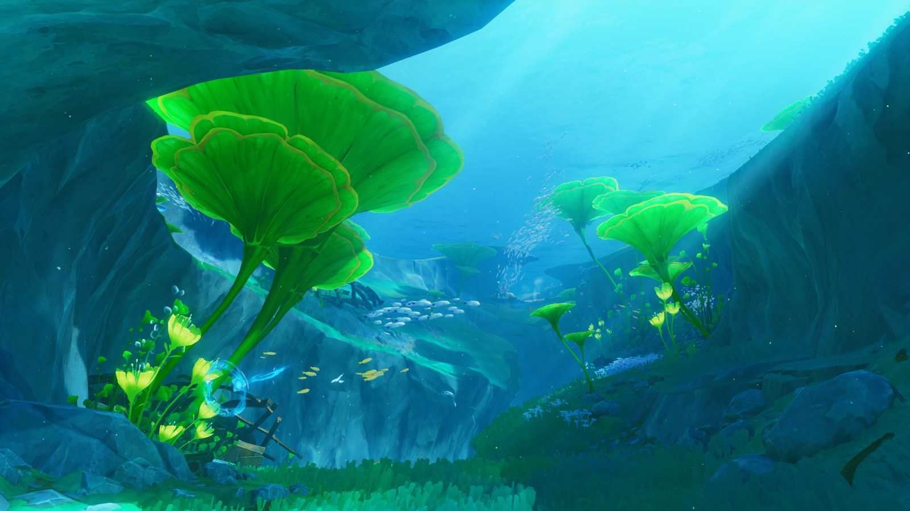
Элтонская впадина
✦
06 · Пиро
Натлан: цвет, камень и простор
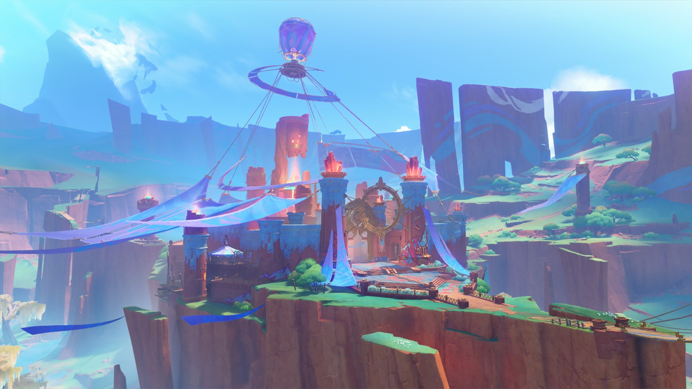
Бассейн бесчисленных огней среди высоких скал
Натлан добавляет в атлас яркие контрасты. Цветные скалы, открытое небо и выразительные сооружения создают совсем другой ритм по сравнению с лесами Сумеру. На первом изображении Бассейн бесчисленных огней воспринимается как центр большого пространства: к нему сходятся линии склонов, а высокие каменные стены помогают почувствовать масштаб окружающего ландшафта.
Попробуй сначала рассмотреть панораму целиком, а затем выделить несколько крупных цветовых пятен. Здесь хорошо видно, как красные и тёплые оттенки соседствуют с голубым небом и зеленью. Необязательно сразу искать мелкие детали: иногда впечатление от места складывается именно из больших форм и свободного пространства между ними.
Две дополнительные иллюстрации меняют точку зрения. Гора Коатепек показана через более тесное, затенённое пространство, тогда как Ручьи Тойек раскрываются в светлой водной панораме. Сравнение помогает увидеть, что у Натлана несколько настроений. Для дневника это хороший повод чередовать общие виды и небольшие наблюдения, сохраняя ощущение живого, разнообразного маршрута.
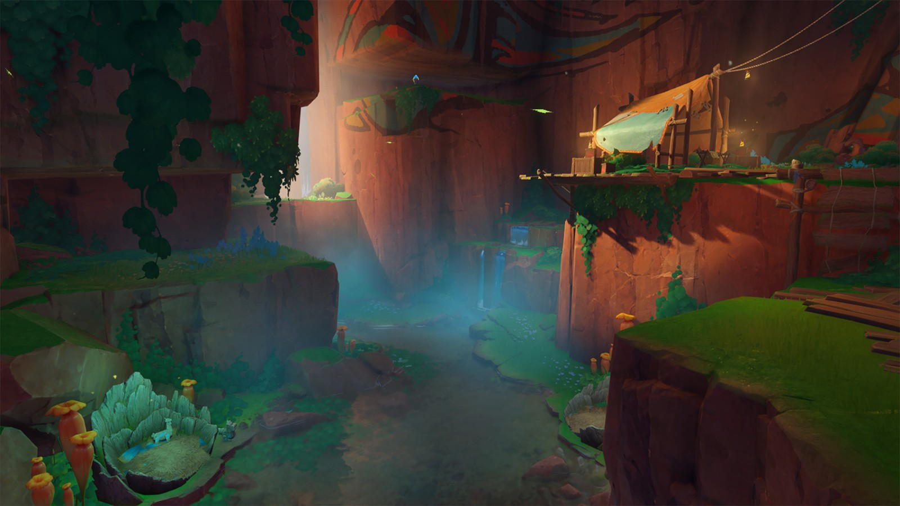
Гора Коатепек
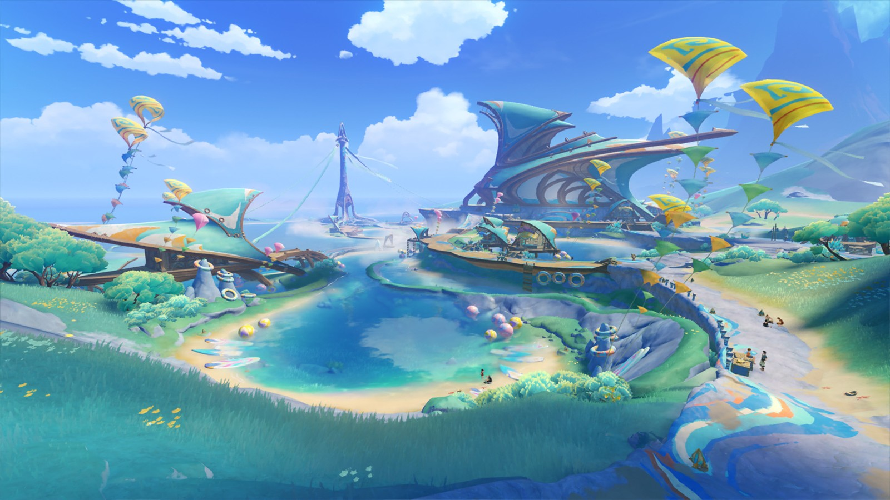
Ручьи Тойек
✦
07 · Лунные тропы
Нод-Край: на границе света и тайн
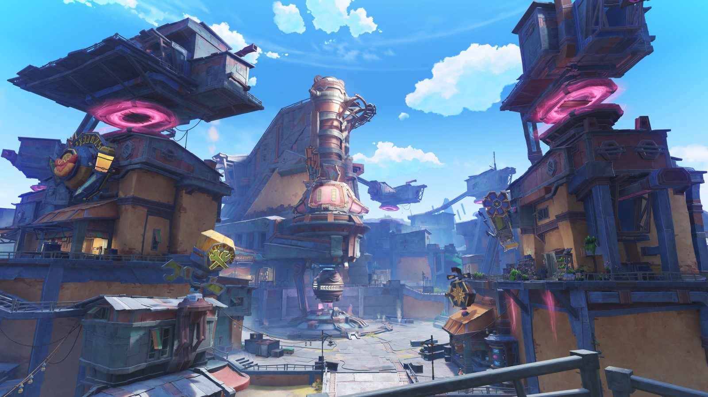
Приграничный город и его необычные механизмы
Нод-Край получил в дневнике отдельную главу: у этих мест собственное настроение, которое хочется рассмотреть внимательнее. На городском пейзаже заметны механизмы, металлические конструкции и необычные светящиеся детали. Они образуют запоминающийся силуэт и сразу меняют характер путешествия. После открытых видов Натлана здесь интересно следить за переходами, балконами и устройством отдельных построек.
Начни с главного ориентира в центре кадра, затем найди повторяющиеся формы по сторонам. Круги, опоры и соединяющие постройки линии помогают собрать сложный городской вид в понятную композицию. При этом яркое небо оставляет пространству лёгкость: даже насыщенная деталями сцена не превращается в сплошную стену архитектуры.
Мастерская крумкаке «Дзынь-Клац» продолжает тему механизмов, а пейзаж «Отголоски крайнего севера» предлагает более тихую остановку. Здесь взгляд уходит к воде и далёкому берегу. Поставленные рядом, эти изображения показывают две стороны одной главы: любопытство к необычным сооружениям и желание остановиться перед открытым горизонтом. Между ними и проходит маленький маршрут этой записи.
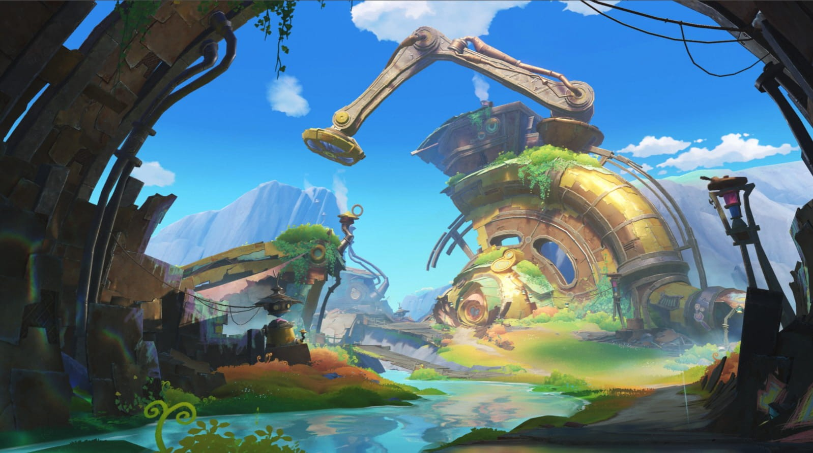
Мастерская крумкаке «Дзынь-Клац»
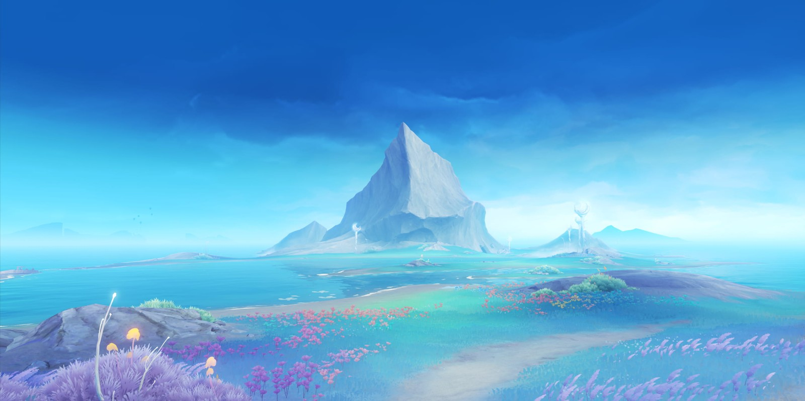
Отголоски крайнего севера
✦
08 · Крио
Снежная: в сиянии северного льда
Ледяной дворец Полярной звезды
Снежная завершает выбранный маршрут северной палитрой. В панораме ледяного дворца преобладают холодные синие оттенки, светящиеся детали и высокие силуэты. После зелёных равнин, островов и водных городов такой кадр воспринимается как смена времени суток и температуры. Знакомый приём дневника остаётся прежним: сначала общий вид, затем несколько деталей, у которых хочется задержаться.
Рассмотри, как свет отделяет сооружения от окружающего пространства. Вертикальные линии направляют взгляд вверх, а небольшие тёплые огни помогают заметить масштаб построек. В холодной цветовой гамме такие акценты становятся особенно выразительными. Удобно сравнить этот вид с Мондштадтом на первой странице: оба пейзажа показывают город, но создают очень разные впечатления.
Железнодорожный узел и Раскопки вечного льда продолжают северную историю через архитектуру и ледяной ландшафт. Один кадр собирается вокруг внутреннего пространства и света, другой раскрывает глубину заснеженного места. Восемь глав не исчерпывают весь Тейват, но дают достаточно разных остановок, чтобы выбрать собственное направление и продолжить дневник новыми наблюдениями.